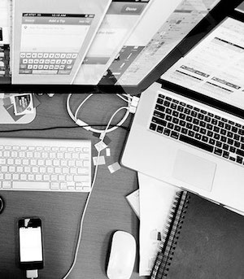

Om oss
GÖTALAND WEBBDESIGN är en freelance Graphic Studio fokuserad på användarupplevelse, grafisk design och webbdesign skapad för att ge lösningar på dina grafiska problem. Under många år har vi arbetat som grafiskdesigners innehåll, vilket gör produktion för digitala kanaler och foretag.Vi tillhandahåller UX Design Consulting Services för att hjälpa ditt företag att uppfylla dina affärsmål.
Vi har gått med i våra ansträngningar för att tillhandahålla effektiva tjänster med tanke på kundens behov. Vi vet inte om vi ska passar vara test. Du behöver inte läsa mer du läser en fiktiv text, var inte nyfiken!
Vi vet inte om vi kommer att klara vårt test, Hassan ville ha testet på fredag, jag ville ha det på torsdag eftersom han hade en utställning av målningar men jag glömde att utställningen är på lördag så det spelar ingen roll att ha testet på torsdag eller fredag.
Effektiva tjänster
Vi arbetar med att använda "Design Thinking" -metodiken för att tillhandahålla lösningar på dina designproblem och göra produkter / mönster dina kunder kommer att älska.
Alla webbplatser är utformade med hjälp av Responsive Design, skapa även skapa personliga formulär och e-handel med online kundvagnar. Jag kan konfigurera Swish som din betalnings gateway. Jag kan design görs med Bootstrap Studio, 960 grids eller Wordpress, beroende på projektbehov.